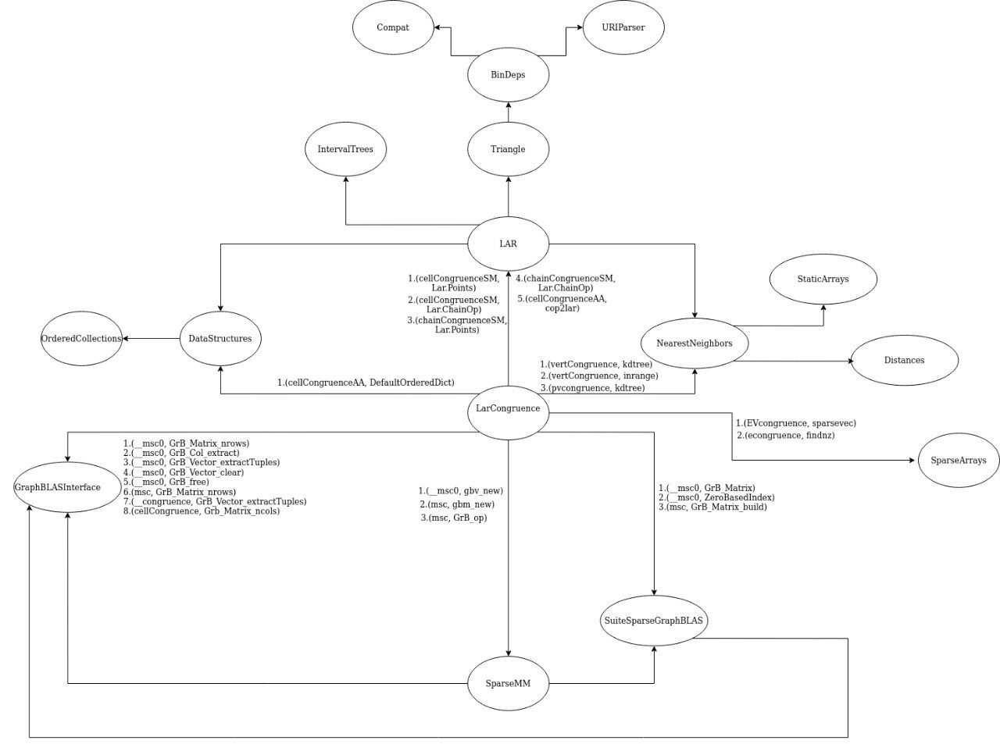

Grafo delle dipendenze originale
In questa sezione è rappresentato il grafo orientato delle dipendenze. Ogni arco orientato rappresenta una chiamata di funzione $(v_1, v_2)$, dove $v_1$ è la funzione chiamante, e $v_2$ è la funzione chiamata. I nodi hanno un’etichetta corrispondente al nome del package mentre gli archi hanno un elenco di etichette corrispondenti alle coppie $(v_1, v_2)$ precedentemente descritte.

Come realizzare il grafo
Per quanto riguarda la costruzione del grafo, è stato utilizzato il package " PkgDependency.jl ", il quale permette di ricavare tutte le dipendenze di un package e le va a mostrare sotto forma di albero. Successivamente, utilizzando le informazioni ottenute tramite il package, è stato creato il grafo sulla piattaforma online " diagrams.net", precedentemente nota come "draw.io".